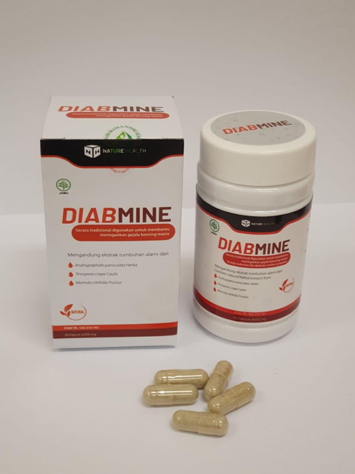

Angka statistik mengenai pasien diabetes menunjukkan hasil yang tak kalah mengejutkan. Sekitar 17% dari populasi di Indonesia mengalami diabetes. Menurut data Organisasi Kesehatan Dunia (WHO), 2 juta orang setiap tahunnya meninggal atau mengalami komplikasi akibat diabetes. Walaupun di Indonesia telah tersedia fasilitas medis dengan para ahli spesialis medis khusus di bidang diabetes, tetapi karena terbatasnya jumlah personel yang menyediakan terapi untuk para pasien diabetes menyebabkan kasus ini masih banyak terjadi di Indonesia. Kita sedang berbincang dengan Dr. Budi Sucipto, seorang spesialis ahli endokrinologi dari Indonesia.
Dr. Budi Sucipto, Sp.PD-KEMD, FES
Dokter spesialis
endokrinologi, Peneliti ahli pada bidang diabetes, Pusat Rehabilitasi
Diabetes.
Ia merupakan dokter spesialis ahli endokrinologi yang sudah memiliki pengalaman
kerja puluhan tahun. Ia merupakan peneliti ahli pada bidang diabetes dan sudah
berkontribusi pada berbagai macam penelitian di Pusat Rehabilitasi Diabetes
Jakarta.
Pengalaman lebih dari 25 tahun
Pewawancara: dr. Budi, saya ingin memulai pertanyaan yang pertama. Apakah angka statistik yang didapatkan dari organisasi WHO sudah benar?
dr. Budi: Sayangnya, saya harus mengkonfirmasi bahwa data yang didapatkan oleh organisasi WHO benar bahwa sekitar 2 juta orang di seluruh dunia meninggal karena diabetes setiap tahunnya. Diabetes menyebabkan banyak komplikasi, yang perlahan-lahan dapat menghancurkan sistem internal tubuh serta merusak organ tubuh. Seperti lambung membusuk, yang disebabkan oleh penyakit degenerasi makula, atau dikenal dengan Retinopati Diabetes, Maag karena gizi buruk, Kadar gula darah tinggi, dan Asam berlebih karena keton. Selain itu, diabetes juga dapat menyebabkan nekrosis atau kanker, yang pada akhirnya, pasien diabetes dapat meninggal karena kondisi tubuh yang memburuk, cacat, atau harus hidup dengan alat bantu pernapasan. Puluhan ribu penderita diabetes berakhir dengan komplikasi penyakit lain. Selain itu, tingkat keparahan diabetes tidak bergantung dari usia penderitanya, mengetahui bahwa pasien berusia 24 tahun atau 45 tahun memiliki resiko yang sama untuk terkena penyakit ini.
Pewawancara: Lalu bagaimana cara untuk mencegah diri kita dari penyakit ini dok?
dr. Budi: Saat ini, untuk menemukan ahli endokrinologi masih sangat sulit. Jika pergi menemui dokter ahli endokrinologi untuk membantu para penderita diabetes, kebanyakan dokter mungkin hanya memberikan insulin untuk para pasiennya. Sehingga pada akhirnya, pasien harus menghadapi penyakitnya sendiri.
Saya sendiri berusaha menemukan jalan keluarnya untuk membantu penderita diabetes. Tetapi harus dapat dipahami bahwa kami adalah peneliti yang independen. Kami tidak memiliki kekuatan untuk bekerjasama dengan berbagai macam klinik. Namun, segera setelah saya melakukan penelitian, dengan proyek bernama "Hilangkan Diabetes". Saya menguji beberapa sampel di penelitian ini menggunakan produk yang berbeda.
Pewawancara: Apakah penelitiannya berhasil?
dr. Budi: Responnya cukup baik. Untuk pertama kalinya kami menemukan produk yang dapat mengurangi kadar gula darah. Produk ini berbentuk kapsul yang bernama Diabmine. Kami berusaha menjual produk ini ke berbagai negara seperti Asia dan negara lain. Kami bekerjasama dengan para tim peneliti untuk berkolaborasi mengembangkan produk generasi kedua untuk menurunkan gejala penyakit diabetes.
Penggunaan Diabmine terdiri dari dua tahap. Yang pertama, membantu meningkatkan penyerapan bahan-bahan aktif ke dalam aliran darah. Penggunaan kapsul Diabmine bertindak sebagai katalis, dengan merangsang kelenjar endokrin dan sistem kekebalan tubuh, sehingga tubuh dapat mulai memproduksi insulin sendiri. Setelah 1 bulan penggunaan, 93% pasien dapat memproduksi insulin tanpa dibantu suplemen. Selanjutnya, pasien hanya perlu pengawasan yang ketat, serta mengkonsumsi ulang apabila pasien tersebut kembali menderita diabetes.
Pewawancara: Wah, Siapa sangka bahwa ada metode yang dapat menghilangkan gejala diabetes dalam 3-4 minggu. Metode ini akan sangat berguna untuk penderita diabetes agar terbebas dari penyakitnya dan menjadi sehat kembali.
dr. Budi: Saat ini para penderita dapat menghilangkan gejala diabetes dengan Diabmine, sebuah metode terapi untuk menghilangkan gejala diabetes dengan efektif.
Komponen alami yang terkandung di dalam kapsul Diabmine, diantaranya ekstrak Tanaman Brotowali atau Tinospora crispa Caulis, yang berkhasiat melarutkan asam urat, fosfat dan oksalat dari tubuh. Tanaman Brotowali bisa digunakan untuk menghilangkan sejumlah penyakit yaitu infeksi ginjal akut dan kronis, rematik, tekanan darah tinggi, kencing manis, kencing batu serta infeksi kandung kemih. Selain itu ekstrak tumbuhan Andrographis Paniculata herba atau dikenal sebagai Daun Sambiloto, merupakan anti-bakteri, anti-jamur, anti-virus serta anti-inflamatori yang dapat membantu menurunkan tekanan darah. Yang terakhir ekstrak Morinda citrifolia Fructus atau buah mengkudu dapat membantu mengatur dan menurunkan kadar gula darah dalam tubuh. Ketiga bahan alami ini saling melengkapi satu sama lain dan memiliki efek yang sangat positif untuk penderita diabetes.
Pewawancara: Apakah kita dapat membeli suplemen ini di pasaran? Di mana produk ini diproduksi?
dr. Budi: Kami merupakan peneliti dari Indonesia, namun produk ini diproduksi di luar negeri. Saat ini jumlah produksi sangat terbatas. Tetapi saat ini kami memproduksi produk ini karena umpan balik terhadap produk ini sangat luar biasa. Diabmine hanya cukup untuk negara-negara yang telah berpartisipasi dalam program pengembangan suplemen generasi kedua.
Negara yang menyediakan dukungan finansial untuk proyek saya, adalah negara tetangga, Singapura. Suplemen Diabmine juga diproduksi di sana. Saya harus mengatakan bahwa Singapura adalah negara yang teknologinya sudah maju. Berkat dukungan finansial, serta tim peneliti yang membantu, produk terapi untuk diabetes Diabmine , dapat tercipta.
Kami juga melakukan survei, yang hasilnya jauh lebih baik dari yang kami harapkan
Pewawancara: Dimana kita dapat menemukan produk ini?
dr. Budi: karena produk kami sangat terbatas, satu-satunya cara untuk membeli produk ini adalah dengan membeli melalui situs distributor resmi. Kami mencoba bernegosiasi dengan banyak distributor produk, yang menolak menjual produk dengan harga terjangkau, karena tidak menguntungkan mereka. Untuk menghilangkan masalah harga yang mungkin lebih mahal dari perantara pihak ketiga, kami menjual produk ini secara online, agar dapat produk ini dapat terjangkau oleh pasien diabetes.
Maka dari itu, saat ini Anda dapat memesan suplemen produk Diabmine untuk membantu menurunkan gejala diabetes Anda dengan pembayaran di tempat (COD) saat barang datang, Anda tidak perlu khawatir untuk mengirim uang melalui transfer.
Pewawancara: Terima kasih banyak atas waktu yang telah Anda luangkan dr. Budi. Apakah ada sesuatu yang ingin Anda sampaikan kepada para pembaca sebelum mengucapkan selamat tinggal?
dr. Budi: saya ingin mengatakan pada semua orang bahwa jika kita tidak mencoba mencari cara untuk membantu kita sendiri terlebih dahulu, maka tidak ada yang bisa membantu kita. Seperti kata pepatah “Tuhan menolong orang yang menolong dirinya sendiri”. Jangan sampai terlambat dan menunggu sampai diabetes menghancurkan sistem organ tubuh Anda. Luka yang membusuk akibat diabetes dapat menjadi sel kanker, yang artinya Anda sama saja seperti berbaring menunggu kematian. Berdasarkan data statistik kami, penderita diabetes hidup 23 tahun lebih singkat dari orang pada umumnya. Diabmine akan membantu meringankan gejala efek samping diabetes dan membuat hidup menjadi lebih bahagia.
Pewawancara: Jika Anda tidak dapat menemukan dokter ahli spesialis endokrin untuk terapi diabetes, atau Anda tidak punya cukup uang untuk menjalani terapi yang mahal, namun ingin meredakan gejala diabetes Anda, segera coba gunakan suplemen Diabmine. Apakah jumlah produk ini terbatas? Berapa jumlah suplemen yang dapat diproduksi oleh produsen?
dr. Budi: Kami mencoba untuk memproduksi Diabmine sebanyak yang kami bisa. Tetapi kami tidak dapat mendistribusikan produk ke semua penderita diabetes secara gratis, yang dapat kami lakukan adalah menjual produk dengan harga yang wajar dan masuk akal. Anda dapat memesan Diabmine dengan harga diskon di situs produsen suplemen ini, cukup dengan mengunjungi situs produsen, isi formulir pada situs produsen, meminta panggilan kembali secara gratis dan konsultan ahli akan menghubungi Anda. Anda bisa mendapatkan suplemen ini dengan diskon 50% untuk harga promosi hingga 24.02.2020!
Mirna Sunandari
Saya memesan Diabmine, dan tidak sampai satu minggu pesanan saya tiba di rumah. Saat ini sudah satu bulan saya menggunakan Diabmine, dan saya merasa lebih baik dari sebelumnya. Saya menyesal tidak menggunakan suplemen ini sejak dulu, dan menderita sangat lama! Terima kasih Diabmine!
Suka ‧ Balas ‧ 0 ‧ Saat
ini
0 ‧ Saat
ini
Ina Amaniah
Saya selalu pergi ke dokter untuk menangani penyakit diabetes saya setiap waktu. Dokter menyarankan saya untuk melakukan “suntik insulin”, setelah saya mulai terkena komplikasi masalah pada perut dan kantung empedu. Untungnya, seorang teman dekat saya merekomendasikan Diabmine, dan pada awalnya saya tidak percaya pada suplemen ini. Namun, saya berpikir apa salahnya untuk mencoba produk ini selama satu bulan. Ajaibnya perut saya tidak sakit lagi, dan minggu depan genap dua bulan saya menggunakan Diabmine. Kadar gula darah normal, dan saya tetap mengkonsumsi Diabmine untuk mencegah diabetes.
Suka ‧ Balas ‧ 0 ‧ 23.02.2020
0 ‧ 23.02.2020
Deasy Natalia
Terima kasih sudah memperkenalkan produk ini. Saya baru saja pesan!
Suka ‧ Balas ‧ 1 ‧ 23.02.2020
1 ‧ 23.02.2020
Dodi Sunandar
Saya sudah pesan, dan sudah diberitahu bahwa barang akan sampai dalam satu minggu. Setelah menggunakannya, saya akan sharing hasilnya.
Suka ‧ Balas ‧ 6 ‧ 23.02.2020
6 ‧ 23.02.2020
Melita Widjaja
Saya sudah pesan di Jakarta. Paketnya datang dengan cepat. Saya sangat sibuk, sehingga tidak menjaga diri saya sendiri. Menurut saya, produk ini sangat luar biasa! Sekarang kadar gula darah saya menurun ke angka yang normal, dan saya merasa sangat kuat dan berenergi!
Suka ‧ Balas ‧ 13 ‧ 22.02.2020
13 ‧ 22.02.2020
Melisa Putria
Sehari sebelumnya, saya sudah lihat produk ini di artikel lain, bahwa akan ada produk terapi diabetes baru yang akan keluar. Saya masih penasaran, apa benar?
Suka ‧ Balas ‧ 16 ‧ 22.02.2020
16 ‧ 22.02.2020
Akhmad Fathur
Terima kasih, saya tinggal di desa yang sangat jauh dan tanpa dokter ahli penyakit diabetes. Saya teratur untuk pergi berobat ke klinik desa, dan dokter langganan saya tidak dapat membantu banyak. Saya melihat artikel suplemen ini dan coba pesan. Harganya sangat murah dengan efek luar biasa! Sekali lagi, terima kasih!
Suka ‧ Balas ‧ 19 ‧ 22.02.2020
19 ‧ 22.02.2020
Intan Mesarro
Setuju dengan semuanya. Saya menganjurkan anda semua untuk mencoba dan melihat sendiri efek suplemen ini! Terima kasih. Terima kasih sudah memperkenalkan Diabmine pada kami!
Suka ‧ Balas ‧ 26 ‧ 22.02.2020
26 ‧ 22.02.2020
Intan Sukma
Saya sudah bekerja sebagai ahli endokrinologi selama bertahun-tahun, dan selama saya bekerja saya tidak pernah bertemu pasien yang sudah saya sarankan untuk mengkonsumsi Diabmine dan mereka tidak memiliki efek samping dari metode ini.
Suka ‧ Balas ‧ 31 ‧ 21.02.2020
31 ‧ 21.02.2020
Dita Kusumaningrat
Saya sudah pesan dengan harga diskon khusus hari ini. Tinggal tunggu hasilnya! :)
Suka ‧ Balas ‧ 37 ‧ 21.02.2020
37 ‧ 21.02.2020
Septiana Azizah
Terima kasih banyak. Saya baca artikel berisi wawancara dengan dr. Budi tentang Diabmine ini, dan saya mendapat banyak info!
Suka ‧ Balas ‧ 36 ‧ 21.02.2020
36 ‧ 21.02.2020
Tatjana Harsono
Saya sangat menyarankan untuk mengkonsumsi Diabmine! Sudah 3 tahun saya tidak merasakan sehat seperti sekarang! Saya bebas makan bolu talas dan brownies lagi, sangat menyenangkan! :)
Suka ‧ Balas ‧ 37 ‧ 20.02.2020
37 ‧ 20.02.2020
Dila Nurani
Saya pesan untuk suami saya, dan saat ini kondisinya jauh lebih baik setelah mengkonsumsi Diabmine selama satu minggu. Suami saya yang dulu terlihat tak berenergi, kini menjadi lebih bersemangat dan bahagia.
Suka ‧ Balas ‧ 43 ‧ 20.02.2020
43 ‧ 20.02.2020
Ricky Yunus
Terima kasih sudah memberitahu saya tentang Diabmine! Saat saya pergi ke Rumah Sakit Umum, saya harus duduk dan menunggu seharian, dan diperiksa kurang dari 5 menit. Saya sudah pesan dan berharap produk ini segera datang, dan saya bisa segera coba!
Suka ‧ Balas ‧ 42 ‧ 20.02.2020
42 ‧ 20.02.2020
Ferry Renaldi
Kebetulan rumah saya jauh dari Rumah Sakit dan susah berobat ke dokter. Apalagi pasti dokter kesulitan untuk menyembuhkan penyakit diabetes saya yang sudah parah. Di keluarga besar saya, banyak saudara dan ibu saya sama-sama menderita diabetes, jadi saya ingin sekali mencobanya. Apa disini ada yang sudah menggunakan Diabmine dan bisa merekomendasikan produk ini?
Suka ‧ Balas ‧ 48 ‧ 20.02.2020
48 ‧ 20.02.2020
Aulia4321
Ferry Renaldi, coba aja pikir, suplemen yang berbentuk kapsul ini akan membantu menormalkan kadar gula darah Anda. Kalau kadar gula Anda sudah mencapai normal, tentu saja tidak akan membuatnya turun ke bawah angka normal. Coba saja beli alat untuk mengukur kadar gula, dan Anda bisa coba ukur sendiri di rumah.
Suka ‧ Balas ‧ 22 ‧ 20.02.2020
22 ‧ 20.02.2020
Ferry Renaldi
Aulia, saya sudah periksa gula darah saya, biasanya 4,8, tetapi kadang saya bisa makan sesuatu yang manis. Saya akan coba untuk ukur kadar gula saya lagi, supaya jadi 8-9. Sekarang, saya akan coba pesan untuk ayah saya juga. Terima kasih banyak!
Suka ‧ Balas ‧ 36 ‧ 20.02.2020
36 ‧ 20.02.2020
Agus Sanjaya
Diabetes saya benar-benar hilang setelah menggunakan Diabmine.
Suka ‧ Balas ‧ 36 ‧ 19.02.2020
36 ‧ 19.02.2020
Lisa Putri
Pak Agus, diabetes tipe 2 memang dapat dihilangkan. Saya bekerja di bidang medis. Banyak pasien diabetes yang berhasil menjalani terapi pada dirinya sendiri di rumah sampai masalahnya hilang.
Suka ‧ Balas ‧ 21 ‧ 19.02.2020
21 ‧ 19.02.2020
Yunitasari888
Saya sudah menderita diabetes selama setahun terakhir, dan setelah menggunakan Diabmine, saya kembali ke dokter untuk pemeriksaan berkala… Ajaib! Diabetes saya menghilang!
Suka ‧ Balas ‧ 24 ‧ 19.02.2020
24 ‧ 19.02.2020
Suprapto Artokusumo
Saya ingin tanya, tekanan darah saya tinggi sekitar 180/100. Apa saya bisa mengkonsumsi produk ini? Saya belum pernah dengar suplemen Diabmine sebelumnya. Oh ya, umur saya 79 tahun saat ini.
Suka ‧ Balas ‧ 31 ‧ 18.02.2020
31 ‧ 18.02.2020
Ninda Fitriani
Bapak Suprapto, tentu saja Anda bisa menggunakan produk ini. Kakek saya juga berusia 81 tahun dan memiliki tekanan darah tinggi, kini ia sudah merasa jauh lebih baik! Diabmine sudah lolos uji coba dari berbagai uji coba penelitian klinis, dan sudah banyak para ahli yang merekomendasikan suplemen ini. Segera pesan karena produk sangat terbatas! 
Suka ‧ Balas ‧ 41 ‧ 18.02.2020
41 ‧ 18.02.2020
Bunga Zainal
Saya sudah lihat banyak pengguna yang sudah menggunakan Diabmine untuk menormalkan tekanan darah. Apakah saya sudah menjawab pertanyaan Anda?
Suka ‧ Balas ‧ 47 ‧ 18.02.2020
47 ‧ 18.02.2020
Supriyanto
Setuju dengan mbak Bunga Zainal tentang Diabmine. Komposisi Diabmine hanya terdiri dari ekstrak tumbuhan herbal alami. Tidak berbahaya bagi penderita tekanan darah tinggi. Sayangnya, produk ini belum dijual di toko dan apotek umum.
Suka ‧ Balas ‧ 39 ‧ 18.02.2020
39 ‧ 18.02.2020
Fenita Juanita
Saya pikir Diabmine menurunkan gejala diabetes secara bertahap, karena gejala diabetes saya menghilang setelah 3 bulan. Jadi setelah menggunakan Diabmine, coba pergi ke Rumah Sakit, periksa darah, dan bandingkan hasilnya. Kadar gula darah tidak kembali naik seperti sebelumnya, saya sudah merasakan efek jangka panjangnya selama setengah tahun. Sangat luar biasa!
Suka ‧ Balas ‧ 43 ‧ 18.02.2020
43 ‧ 18.02.2020
Sena Maulana
Mbak Fenita Juanita, berapa nilai kadar gula darah Anda? Apakah kembali normal? Apakah Anda juga mengkonsumsi suplemen lainnya? Apakah juga mengontrol diet dengan ketat?
Suka ‧ Balas ‧ 25 ‧ 18.02.2020
25 ‧ 18.02.2020
Fenita Juanita
Nilai kadar gula saya saat ini normal dan tetap. Saat minum teh, tambahkan susu, daripada gula. Perhatikan komposisi gula dan makanan manis yang Anda makan.
Suka ‧ Balas ‧ 36 ‧ 18.02.2020
36 ‧ 18.02.2020
Vismaia Nurifitriani
Artikel ini sangat luar biasa! Opini pengalamannya jujur. Dan setelah saya baca artikelnya, saya langsung memesan Diabmine saat itu juga.
Suka ‧ Balas ‧ 39 ‧ 17.02.2020
39 ‧ 17.02.2020
Riandi
Saya sudah coba Diabmine, produk ini bekerja dengan sangat baik!
Suka ‧ Balas ‧ 39 ‧ 17.02.2020
39 ‧ 17.02.2020
Bagus Adisaputra
Dokter mendiagnosis saya menderita diabetes tipe 2 tahun lalu. Saya sudah mencoba berbagai macam suplemen, namun setelah kadar gula menurun dan saya tidak mengkonsumsinya lagi, kadar gula saya kembali naik. Saat saya pergi jalan-jalan ke Eropa, seorang dokter menghampiri saya yang sedang meminum produk suplemen untuk gejala diabetes. Ia menyarankan saya untuk mengkonsumsi suplemen Diabmine. Suplemen ini sangat membantu. Nilai kadar gula darah saya tidak kembali naik, dan saya merasa luar biasa.
Suka ‧ Balas ‧ 43 ‧ 17.02.2020
43 ‧ 17.02.2020
Neni Kusuma
Saya dulu sempat berpikir bahwa diet dan olahraga dapat membantu mengontrol kadar gula darah. Tapi saat ini saya harus mengunjungi dokter, meminum 5 tipe obat, sangat melelahkan
Suka ‧ Balas ‧ 50 ‧ 17.02.2020
50 ‧ 17.02.2020
Agung Haryanto
Saya sudah menggunakan Diabmine, dan kadar gula saya kembali normal. Coba untuk lebih percaya diri dan gunakan Diabmine. Saya menemukan informasi tentang Diabmine di forum kesehatan di internet. Di forum itu, seorang dokter mengatakan pada saya bahwa terdapat metode untuk menurunkan gejala diabetes yang bisa dilakukan di rumah. Saya bertanya, apakah akan sebaik kapsul yang diberikan oleh dokter di Rumah Sakit? Beliau menyarankan saya untuk mencoba Diabmine, untuk menghilangkan gejala diabetes tipe 2 saya. Dan saat ini saya sedang menunggu hasil tes gula darah saya!
Suka ‧ Balas ‧ 57 ‧ 17.02.2020
57 ‧ 17.02.2020
Anggita Lesmana
Saya kembali ke dokter langganan saya dan kami berdiskusi membicarakan produk ini. Beliau mengatakan bahwa komponen aktif yang terkandung dalam kapsul ini sangat baik untuk tubuh. Komponen herbal dalam Diabmine dapat membantu mengatur keseimbangan dan membersihkan racun dari dalam tubuh. Bahan-bahan yang terkandung di dalamnya 100% alami!
Suka ‧ Balas ‧ 64 ‧ 17.02.2020
64 ‧ 17.02.2020
Dwi Saraswati
Terima kasih atas semua sarannya. Saya baru saja memesan Diabmine dari situs produsen beberapa hari lalu.
Suka ‧ Balas ‧ 66 ‧ 17.02.2020
66 ‧ 17.02.2020
Anang Fauzan
Saya sudah baca artikel hasil penelitian Diabmine yang luar biasa. Delapan dari sepuluh penderita diabetes kadar gula darahnya berhasil kembali normal!
Suka ‧ Balas ‧ 73 ‧ 17.02.2020
73 ‧ 17.02.2020
Danang Ridho
Saya tipe orang yang kurang peduli dengan kesehatan. Hingga suatu saat dokter mendiagnosa saya dengan diabetes tipe dua. Namun, setelah saya mencoba Diabmine, pada bulan yang sama kadar gula saya kembali normal, berat badan turun, dan rasa sakit di perut berkurang. Saya sangat merekomendasikan Diabmine. Saya membeli produk ini di website resmi produsen.
Suka ‧ Balas ‧ 73 ‧ 17.02.2020
73 ‧ 17.02.2020